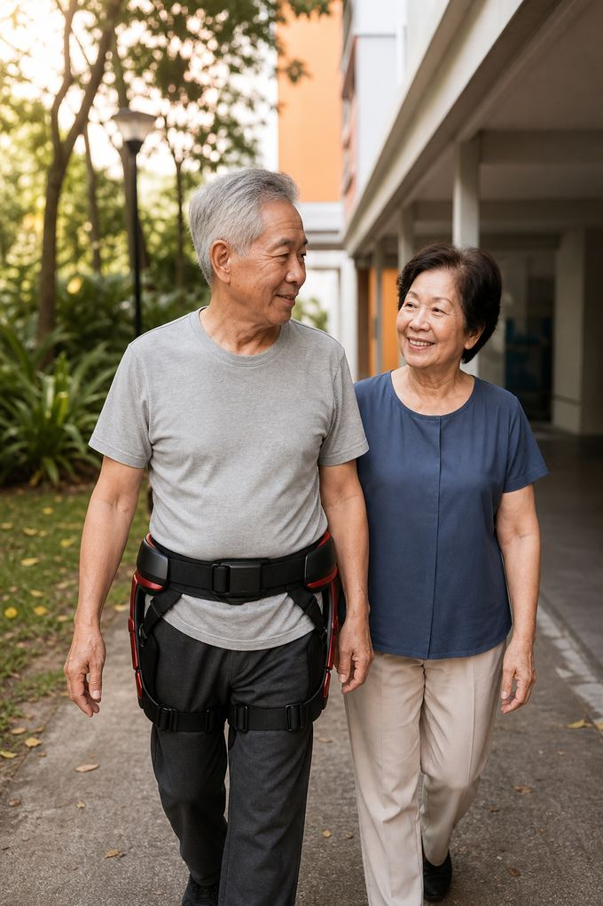
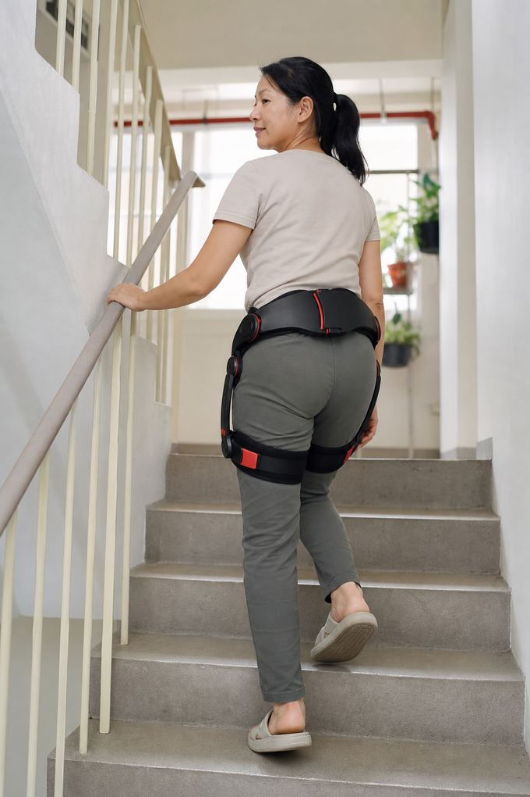

物理治療師應該向個案推薦動力髖部外骨骼嗎？
有時候可以，而且只能作為治療的補充。像 ExoStride US-H-1.0Pro 這樣的消費級髖部外骨骼，會在髖部屈曲時提供最多 16 Nm 的助力，能讓已經能站立和行走的個案在樓梯、斜坡和較長步行時比較省力。它不提供平衡支撐，不能取代步態訓練計畫，也不是醫療器材。有用的問題不是「它有沒有效？」，而是「它能否讓這位個案在兩次治療之間，更常、更安全地走他們真實的路線？」
這款設備實際輔助什麼
US-H-1.0Pro 是只作用於髖部的動力外骨骼。腰帶位於骨盆，短連桿沿兩邊大腿外側而下，穿戴者走路時，每側髖部的馬達會在屈曲方向增加扭矩。規格表標示峰值為 16 Nm。控制系統持續讀取步態，並自行在平地、樓梯和較陡地形之間切換模式，所以個案走到一半不需要調整任何東西。穿戴者坐下時，姿勢偵測會暫停助力；站起時恢復。
它做不到的事，對臨床推理同樣重要：
- 它不直接輔助膝部或踝部。
- 它不提供靜態支撐點，所以不像拐杖或助行架那樣是平衡輔具。
- 它無法移動個案自己動不了的肢體。它是在自主出力上加成，而不是創造出力。
- 它不記錄臨床結果指標。
請把它看作降低真實世界步行中髖部屈曲成本的工具，而不是訓練機器人。
它通常適合哪些個案
實際上，從髖部輔助設備中獲益最多的個案有三個共同特點：他們能獨立站起和行走，不論是否使用拐杖；限制他們的是費力和疲勞，而不是平衡；而且有一條他們已經放棄的特定路線，例如通往家門的樓梯、走去市場的路，或去診所途中的天橋。
這類個案包括許多步行距離逐漸減少的長者，以及已完成正式復健療程、但仍很快疲累的人。製造商聲稱每一步下肢負荷最多減少 80%，步行距離增加 2–3 倍；請把這些看作製造商在其自身條件下測得、針對這款型號的聲稱，並預期個人結果會有很大差異。
什麼時候該謹慎，或直接說不
主要問題是平衡、頭暈或凍結步態的個案，用你已在使用的輔具和訓練會更合適。任何無法負重、尚未獲准讓近期手術關節承重，或腰帶和大腿接觸點的皮膚容易破損的人，都需要先做臨床決定。我們關於動力髖部外骨骼不適合誰的指南，用淺白的語言列出了常見的排除條件，你可以分享給家屬。
ExoStride 是以消費級行動輔助器材銷售。它並未註冊為醫療器材，本網站上的任何內容都不應被理解為治療宣稱。如果個案問它能不能治好某種疾病，誠實的答案是不能；它可能讓他們在和你一起處理那個問題時，走路不那麼累。
如何把它融入治療計畫
物理治療師能發揮的最有用的作用，是定義路線和衡量方式。新加坡團隊的專人指導試穿會設定助力等級，並陪個案走他們自己的路線，但你才知道個案應該練習什麼、不應該做什麼。


- 指定一條個案已經放棄的路線，並把它定為目標。
- 決定是否要讓某些療程或某些日子保持沒有助力，以免助力在不知不覺間取代了你希望他們做的訓練。
- 約定一個家屬可以記錄的簡單指標，例如步行距離、休息次數，或不停歇爬完的樓層數。
- 在第二週和第四週檢視，就像對待任何其他居家計畫一樣。
我們關於第一個月追蹤進展的指南，提供了一份家屬不需任何設備就能填寫的簡單紀錄表。
值得問賣家的問題
物理治療師往往是在場唯一會提出尷尬問題的人。以下都是合理的問題，新加坡團隊可以在示範時回答：
- 支持每一項性能數據的究竟是什麼測量，在什麼條件下進行？
- 助力等級如何設定，第一週能否調低以求穩妥？
- 如果走到一半電池沒電會怎樣？（設備會停止助力，但不會鎖住雙腿。）
- 臨床人員可以出席試穿嗎？
你也可以在我們關於外骨骼與拐杖、助行架和輪椅的指南中，把它和個案已在使用的輔具做比較。